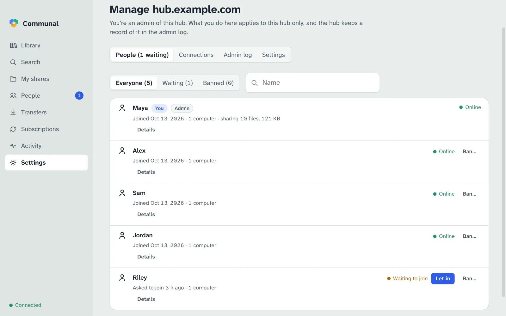

Run a hub
A hub is the meeting point for a group: it knows who’s in it, what they share (names, sizes and who may see them, never the files), and introduces computers to each other. A small Linux machine or container is plenty.
What it needs
- A Linux machine with Node.js 24 or later (or Docker).
- A domain name pointing at it, and a TLS certificate for that name (for example from Let’s Encrypt).
- These ports forwarded from your router: TCP 443 for the hub, UDP 3478 and 3479 so the hub can tell each computer what kind of network it’s on, and TCP 80 if you get certificates with certbot’s HTTP check.
The hub must see each computer’s real address, so it handles TLS itself: don’t put it behind a reverse proxy.
Install
The quickest way installs the latest release, or upgrades to it after backing up the hub’s data (it needs Node.js 24 or later):
curl -fsSL https://hypnopompia.github.io/Communal/install.sh | sh -s -- hub
Or by hand: download communal-hub-<version>.tar.gz from the
latest release,
then:
tar xzf communal-hub-*.tar.gz
cd communal-hub-*
sudo ./install.sh
That installs the hub to /opt/communal-hub with its data in
/var/lib/communal-hub, and sets up the communal-hub systemd
service. Its settings are in /etc/communal-hub/communal-hub.env: the port
(443), the NAT probe ports, the certificate files and the join mode.
Certificate
With certbot, a renewal hook copies each new certificate where the hub reads it and restarts the hub:
sudo apt install certbot
sudo mkdir -p /etc/letsencrypt/renewal-hooks/deploy
sudo tee /etc/letsencrypt/renewal-hooks/deploy/communal-hub.sh >/dev/null <<'EOF'
#!/bin/sh
set -e
src=/etc/letsencrypt/live/hub.example.com
install -o communal-hub -g communal-hub -m 0644 "$src/fullchain.pem" /etc/communal-hub/tls/fullchain.pem
install -o communal-hub -g communal-hub -m 0600 "$src/privkey.pem" /etc/communal-hub/tls/privkey.pem
systemctl restart communal-hub
EOF
sudo chmod +x /etc/letsencrypt/renewal-hooks/deploy/communal-hub.sh
sudo certbot certonly --standalone -d hub.example.com \
--deploy-hook /etc/letsencrypt/renewal-hooks/deploy/communal-hub.sh
People then join with the address hub.example.com; the app fills in the rest
(wss://hub.example.com/v1).
Who can join
Join your new hub first. The first account on a hub becomes its admin, and it’s let in straight away. After that, a new hub is in approval mode: each new account waits until you let it in. Admin commands work on the database while the hub runs:
sudo runuser -u communal-hub -- env COMMUNAL_HUB_DATA=/var/lib/communal-hub /usr/local/bin/communal-hub users
sudo runuser -u communal-hub -- env COMMUNAL_HUB_DATA=/var/lib/communal-hub /usr/local/bin/communal-hub approve <user_id>
sudo runuser -u communal-hub -- env COMMUNAL_HUB_DATA=/var/lib/communal-hub /usr/local/bin/communal-hub ban <user_id> --reason "…"
sudo runuser -u communal-hub -- env COMMUNAL_HUB_DATA=/var/lib/communal-hub /usr/local/bin/communal-hub set join_mode open
sudo runuser -u communal-hub -- env COMMUNAL_HUB_DATA=/var/lib/communal-hub /usr/local/bin/communal-hub set name "Hunter family"
sudo runuser -u communal-hub -- env COMMUNAL_HUB_DATA=/var/lib/communal-hub /usr/local/bin/communal-hub get
sudo runuser -u communal-hub -- env COMMUNAL_HUB_DATA=/var/lib/communal-hub /usr/local/bin/communal-hub admin add <user_id>
sudo runuser -u communal-hub -- env COMMUNAL_HUB_DATA=/var/lib/communal-hub /usr/local/bin/communal-hub log
Admins can do all of this in the app as well: Settings › Hubs › Manage.
admin list|add|remove chooses who administers the hub. Only these commands
can make or remove admins. If someone else joined first, add yourself and remove them.
log shows every admin action, from the command line or an admin’s app.

The name is what people see in the app instead of the hub’s address. Clients pick it up the next time they connect.
With join_mode open anyone who knows the address can join. Since accounts
need no email, a banned person can come back with a new key on an open hub; use approval
mode if that matters. unban <user_id> lifts a ban, and
get shows every setting.
Limits
A hub limits how much any one person or address can ask of it, so a misbehaving client
can’t take it over. Three of the limits are settings, changed with
communal-hub set <key> <n> or in the app under Manage › Settings,
where 0 means no limit:
-
signups_per_hour(20): new accounts and new devices from one internet address in an hour. An IPv6 /64 counts as one address. max_files_per_device(1,000,000): files one computer may list.max_devices_per_account(20): computers and phones per account.
The rest are fixed, such as how many connections one address may hold open. A client that sends too much is slowed down rather than refused, so older apps keep working. Every change to the settings goes in the admin log.
Docker
Every release publishes the hub as a ready-made image,
ghcr.io/hypnopompia/communal-hub, for 64-bit Intel/AMD and ARM. It has
Node.js and everything else inside: you don’t install anything but Docker. Use the
latest tag, or a version such as 0.1.12 to pin one.
Linux only. The hub works out each computer’s network from the address its connections come from, on TCP 443 and UDP 3478–3479. Docker Desktop (on Windows, macOS and Linux alike) runs containers in a virtual machine and passes every connection on from its own address, so the hub would see one internal address (such as 192.168.65.1) for everyone and couldn’t introduce computers to each other. Run a hub on a Linux machine with Docker Engine, not with Docker Desktop.
1. Certificate
The hub reads its certificate once, when it starts, so a renewal needs a restart. Get one
with certbot on the host (it needs TCP 80 forwarded), and let a renewal hook copy it where
the container reads it. The container runs as user node (uid 1000), so the
copies belong to uid 1000; certbot’s own files are readable only by root.
sudo apt install certbot
sudo mkdir -p /etc/communal-hub/tls /etc/letsencrypt/renewal-hooks/deploy
sudo tee /etc/letsencrypt/renewal-hooks/deploy/communal-hub.sh >/dev/null <<'EOF'
#!/bin/sh
set -e
src=/etc/letsencrypt/live/hub.example.com
install -o 1000 -g 1000 -m 0644 "$src/fullchain.pem" /etc/communal-hub/tls/fullchain.pem
install -o 1000 -g 1000 -m 0600 "$src/privkey.pem" /etc/communal-hub/tls/privkey.pem
if docker inspect communal-hub >/dev/null 2>&1; then docker restart communal-hub; fi
EOF
sudo chmod +x /etc/letsencrypt/renewal-hooks/deploy/communal-hub.sh
sudo certbot certonly --standalone -d hub.example.com \
--deploy-hook /etc/letsencrypt/renewal-hooks/deploy/communal-hub.sh2. Start the hub
With host networking the hub listens on the machine’s own ports, exactly like the installed version, so nothing stands between it and the clients. This is the recommended way:
docker run -d --name communal-hub --restart unless-stopped \
--network host \
-v communal-hub-data:/data \
-v /etc/communal-hub/tls:/tls:ro \
-e COMMUNAL_HUB_PORT=443 \
-e COMMUNAL_TLS_CERT=/tls/fullchain.pem \
-e COMMUNAL_TLS_KEY=/tls/privkey.pem \
-e COMMUNAL_JOIN_MODE=approval \
ghcr.io/hypnopompia/communal-hub:latest
Forward TCP 443 and UDP 3478 and 3479 from your router to this machine, as for any hub.
The hub’s key and database live in the communal-hub-data volume: back it up.
COMMUNAL_JOIN_MODE is only read on the first start (see
Who can join). Check it’s up with
curl https://hub.example.com/healthz.
The same with Docker Compose, in a compose.yml:
services:
hub:
image: ghcr.io/hypnopompia/communal-hub:latest
container_name: communal-hub
restart: unless-stopped
network_mode: host
volumes:
- communal-hub-data:/data
- /etc/communal-hub/tls:/tls:ro
environment:
COMMUNAL_HUB_PORT: '443'
COMMUNAL_TLS_CERT: /tls/fullchain.pem
COMMUNAL_TLS_KEY: /tls/privkey.pem
COMMUNAL_JOIN_MODE: approval
volumes:
communal-hub-data:
name: communal-hub-dataThen docker compose up -d.
Without host networking
Published ports also work on Linux: Docker forwards them in the kernel and keeps each client’s address. Inside the container the hub listens on 8443. Publish the probe ports under the same numbers on the host, since the hub tells clients which ports to probe:
docker run -d --name communal-hub --restart unless-stopped \
-p 443:8443/tcp -p 3478:3478/udp -p 3479:3479/udp \
-v communal-hub-data:/data \
-v /etc/communal-hub/tls:/tls:ro \
-e COMMUNAL_TLS_CERT=/tls/fullchain.pem \
-e COMMUNAL_TLS_KEY=/tls/privkey.pem \
-e COMMUNAL_JOIN_MODE=approval \
ghcr.io/hypnopompia/communal-hub:latest
In Compose, replace network_mode: host and
COMMUNAL_HUB_PORT with
ports: ['443:8443/tcp', '3478:3478/udp', '3479:3479/udp']. Use host
networking instead if your hub’s name has an IPv6 address: the hub listens on IPv4, and
Docker hands IPv6 connections to it through a proxy that hides the client’s address.
Admin commands
The admin commands run inside the container, on the same database, while the hub runs:
docker exec communal-hub communal-hub users
docker exec communal-hub communal-hub approve <user_id>
docker exec communal-hub communal-hub set name "Hunter family"
docker exec communal-hub communal-hub admin add <user_id>
docker exec communal-hub communal-hub logLogs: docker logs communal-hub.
Upgrading
A new version updates the database when it first starts, so stop the hub and back up its data before upgrading:
docker pull ghcr.io/hypnopompia/communal-hub:latest
docker stop communal-hub
docker run --rm -v communal-hub-data:/data -v "$PWD":/backup debian:bookworm-slim \
tar czf "/backup/hub-data-$(date +%Y%m%d).tar.gz" -C /data .
docker rm communal-hub
Then start it again with the same docker run command as above. With Compose:
docker compose pull, docker compose stop, the backup, then
docker compose up -d.
What a hub knows
The hub stores accounts (display name and public key), connections, groups, access rules, and the names, sizes and types of shared files. It never stores files, thumbnails or download history, and it never relays transfers. In the app, its admins can see who is on the hub, who is connected to whom, and how many files each computer shares, but not file names, groups or who can see what. Whoever runs the server can read everything the hub stores.